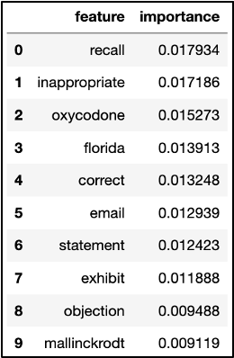
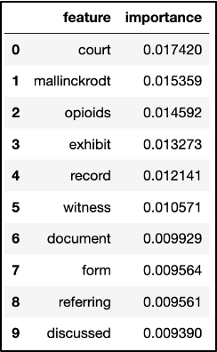
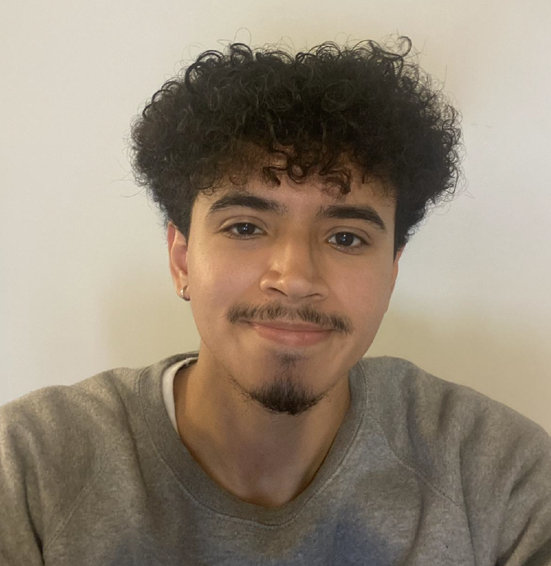

Guest post by Manami Yasui, Manamiis a professor at the International Research Center for Japanese Studies, Kyoto, Japan and guest curator for the exhibition “Maternal Health and Images of the Body in Japanese Ukiyo-e.“
We are pleased to announce the new exhibition, “Maternal Health and Images of the Body in Japanese Ukiyo-e,” which will be on view on the main floor of the UCSF Kalmanovitz Library at Parnassus Heights from November 2023 through December 2024. This exhibition explores the historical perspectives surrounding the human body and maternal health in Japan through the lens of ukiyo-e woodblock prints and paintings.
The central question driving our selection of images, most of which come from the UCSF Japanese Woodblock Print Collection and the International Research Center for Japanese Studies (Nichibunken) collection, is how was the human body represented in mid-19th-century Japan? Ukiyo-e is a genre of Japanese graphic art popularized from the 17th through the 19th-centuries. The exhibition uses a selection of ukiyo-e works and other artifacts from the 1820s to the 1880s. By drawing on various visual arts and medical media, we explore pregnancy and childbirth in early modern Japan and how birth control methods such as abortion and mabiki (infanticide or “thinning out”) were viewed at the time.
Depictions of pregnancy and the fetus
“Ten Realms within the Body,” 体内十界之圖, 1885 by Utagawa Kuniteru III 歌川国輝（三代）.
One important representation of the early modern epistemology of the human body from a Japanese lens is seen in this fascinating ukiyo-e print entitled the “Ten Realms within the Body” 体内十界之圖, 1885 by Utagawa Kuniteru III 歌川国輝（三代）(active ca. 1877-1896).
This print depicts a Japanese woman wearing only an underskirt. She appears to be pregnant and is pointing at her ample abdomen. The interior of her abdomen depicts a series of scenes likened to a Buddhist mandala. The image is likely a parody of the famed “Ten Realms Mandala” (jp. Kanjin jukkai zu), which illustrates the ten states of Buddhist existence surrounding a central “heart” character. Of the ten realms, the upper five represent enlightened states, while the lower half includes one realm representing humanity and the remaining four realms representing “lesser beings,” such as demons or animals. Kuniteru’s version maintains a similar balance with each “realm” by representing facets of human society; however, this version connects Buddhist beliefs with the understandings of pregnancy and life choices during Kuniteru’s time.
Putting the interior of the human body on display was one of the hallmarks of visual media during this period. People were interested in the invisible interior of the human body, and the ukiyo-e of the time responded to their desire to peer inside. Another popular set of prints depicts ten pregnant women, each with a fetus at a different stage of growth. While Western medical science measures the length of a full-term pregnancy at nine months (40 weeks), in early modern Japan, a full-term pregnancy was calculated according to the lunar calendar, and was divided into ten four-week periods. This explains why the women depicted in the ukiyo-e, “Realize One’s Parental Love” 父母の恩を知る図, 1880, Utagawa Yoshitora 歌川芳虎 depicts ten stages of growth.
The Chinese (Sinitic) medical body
“Model Sexual Practices for Good Health,” 房事養生鑑, 1855. Unknown Artist.
At the same time, the human body in early modern Japan reflected a worldview grounded in Chinese (Sinitic) medical thought. This system classifies organs as consisting of “five viscera and six entrails.” The above print contains advice on conducting one’s sex life through the then-popular mode of “nourishing health” (yōjō), with detailed explanations on important reproductive organs such as the uterus. The small figures within each organ represent the constant motion and labor that each organ undertakes to keep the body functioning.
The introduction of Western anatomy to Japan
While most medical depictions of the body in early modern Japan were informed by Chinese (Sinitic) medicine, European anatomy books, many published in Dutch editions, were imported by Dutch merchants into the port of Dejima in Nagasaki, Kyushu, which was built in 1636. One example was “Remmelin’s Catoptrum Microcosmicum” (1619), which was introduced to Japan via its Dutch version, “Pinax Microcosmographicus” (1667). The book publishers painstakingly printed organs on small flaps of paper that are then layered on top of one another. This book attempted to illustrate holistically male and female bodies, and the inner organs in detail. When the reader flips open the layer depicting the womb, an image of a fetus appears.
“Catoptrum Microcosmicum”, 1619, Johann Remmelin (McGill University collection)
In this exhibition, you can compare both Remmelin’s original (UCSF Archives and Special Collections, 1619) and the Japanese translated edition (Nichibunken collection, 1772). We have also replicated the female body image from the Japanese translation for the exhibition. This provides visitors with a hands-on experience of “exploring” the text by “opening” the abdomen and “removing” the internal organs of the body.
We encourage you to enjoy these diverse images of pregnancy, childbirth, and bodily images from Japan’s Edo period (1603 -1868). We hope viewers will gain a better understanding of early modern Japanese practices around the body, and maternal health, including abortion and mabiki. Along with the UCSF Kalmanovitz Library exhibition, we are also planning to offer online exhibitions in Japanese, English, and Chinese. Please stay tuned for further information.
Exhibition opening reception
We invite the UCSF community and members of the public to attend our opening reception Wednesday, November 1, 2023, from 4 to 5:30 p.m. at the UCSF Kalmanovitz Library (Parnassus Heights). Admission is free and open to the public. Light refreshments will be provided while supplies last.
『和蘭全躯内外分合図』”Anatomical Atlas of the Whole Body,” 1772 (Nichibunken collection) 本木了意訳、鈴木宗云撰次Motoki Ryōi, trans (c. 1682), Suzuki Shūun, ed.
Acknowledgements
The exhibition, Maternal Health and Images of the Body in Japanese Ukiyo-e, is a collaboration between the University of California, San Francisco Archives and Special Collections and the International Research Center for Japanese Studies. We would like to express our sincere gratitude to the collaborators listed below and the many other colleagues who made this exhibition possible.
International Research Center for Japanese Studies
Manami Yasui, PhD, guest curator
Nichibunken Project Team
Lawrence Marceau, Noriko Itasaka, Lee I Zhuen Clarence, Michaela Kelly, Chihiro Saka, Hiroshi Fujioka, Ayako Ono, and Yoko Sakai
University of California, San Francisco Library
Polina Ilieva, Associate University Librarian for Collections and University Archivist
UCSF Project Team
Peggy Tran-Le, Kirk Hudson, and Jessica Crosby
With special thanks to
Stephen Roddy, University of San Francisco
Mark McGowan, exhibition graphic designer
Feature image credit: “Realize One’s Parental Love” 父母の恩を知る図, 1880. Utagawa, Yoshitora歌川芳虎, courtesy of the UCSF Archives and Special Collections.
Guest post by Noel Salmeron, 2023 Senior Data Science Fellow for the Industry Documents Library and Data Science Initiative.
Hi everyone! I had the opportunity of interning for the Industry Documents Library in coordination with the Data Science Initiative as the Senior Data Science Fellow for the Summer of 2023. I am working towards my Bachelor’s degree in Data Science and minoring in Education, and I plan to graduate in May 2024. I feel grateful that I could earn this position with UCSF and work with the fascinating Industry Documents Library as I realize how valuable archives and data are, especially when doing my own research. The Data Science Initiative was extremely helpful in teaching me Machine Learning and Natural Language Processing topics pertinent to the project and valuable for my future in data science.
Project Background
Currently, the Industry Documents Library contains more than 18 million documents relating to public health, as well as thousands of audiovisual materials, such as “recordings of internal focus groups and corporate meetings, depositions of tobacco industry employees, Congressional hearings, and radio and TV cigarette advertisements.” With this project, we wanted to evaluate the transcription accuracy of digital archives and its impact on documentation and the creation of subject words and descriptions for such archives.
Project Team
Kate Tasker, Industry Documents Library Managing Archivist
Geoffrey Boushey, Head of Data Engineering (and Senior Fellow Advisor)
Rachel Taketa, Industry Documents Library Processing and Reference Archivist
Melissa Ignacio, Industry Documents Library Program Coordinator
Noel Salmeron, Senior Data Science Fellow
Adam Silva, Junior Data Science Fellow
Bryce Quintos, Junior Data Science Fellow
Project Terminology
Here are a few important terms to note!
Metadata: a set of data that describes other data (i.e., author, date published, file size, etc.)
Classification: categorizing objects (or text) into organized groups
Text cleaning: reducing complex text to simple text for more efficient use in Natural Language Processing
And a few terms were used interchangeably throughout this project!
Description / Summary
A condensed version of some text
Subject / Tag / Keyword / Topic
A single word that helps to define the text or frequently appears within the text
Project Objectives
Overall, the project had a couple of main objectives. The team wanted to train a Machine Learning model to extract subjects from Industry Documents Library video transcripts and evaluate the accuracy of the machine-generated subjects. We planned to utilize the junior interns’ datasheet they created with subjects and descriptions for over 300 videos to train the model for each tag we chose to analyze.
(The video transcripts were generated beforehand by Google AutoML with the help of Geoffrey Boushey).
Transcript Cleaning
Once the video transcripts were created from Google AutoML, I was able to clean the text using techniques I learned from previous Data Science Initiative workshops. The “Machine Learning NLP Prep” workshop techniques were especially helpful for this portion of the project. I began by setting all 324 transcripts in our dataframe to a lowercase format. This helps simplify text analysis in the long run, especially when avoiding case sensitivity complications. My next step was to remove stop words, which are common and redundant words such as articles, conjunctions, and prepositions. This was possible with the Natural Language Toolkit library for Python, which contains a list of stop words I could add to since I especially noticed ‘p.m.’ and ‘a.m.’ appearing in depositions. I continued by removing everything that isn’t alphabetic using a regular expression (or regex), a sequence of characters corresponding to a pattern to be matched. Any single characters or two character pairs were also removed. Finally, it was essential to stem words to be able to group common words without worrying about suffixes.
ML Model Creation using ID and subject/tag
After text cleaning, we set video IDs as their indices in our running dataframe to efficiently and consistently identify them. Our running dataframe consisted of a row for each of the 324 videos with columns that denoted their ID, subject words, transcript, and a category value of ‘0’ for ‘no’ or ‘1’ for ‘yes’ that corresponded to whether or not the video’s subjects words included the specific tag we were after in each single-tag analysis.
To provide a more concrete example, we will use the “lawsuit” tag, which means each video was denoted with a ‘1’ in the category column if it contained the “lawsuit” tag from the junior interns’ datasheet.
Continuing, we created training and test sets from the dataframe with a 50/50 split. This was followed by a pipeline of several operations in a sequence that included Count Vectorization and Random Forest Classification. Count Vectorization is a method in Natural Language Processing to convert text into numerical values primed for Machine Learning. This way, we can note word frequency in each word for each transcript. Furthermore, Random Forest Classification is a collection of decision trees that make binary decisions based on input and continually “bootstraps” (re-samples) from the training data set to make predictions about whether or not a video contained the “lawsuit” tag.
Features for Each Tag
We then gathered feature words and their importance values as to how they supported the model in determining if a video belonged to the “lawsuit” tag. These feature words included “exhibit,” “plaintiffs,” “counsel,” and “documents,” which change every time we run the model. It appears the less common words also slipped through, such as the company name “Mallinckrodt,” which may not appear as important in other transcript datasets relating to lawsuits.
Chart displaying a list of feature words such as “email,” “exhibit,” “court,” and other words, each labeled with numeric value representing the word’s importance value.
Cross Validation and Match Probability
Moving forward, we used Cross Validation to verify that the model’s performance was not drastically different with different training and test subsets from the running dataframe. Following this process, we were able to create a dataframe that included a column “y_adj” to indicate “Not” for the video not falling under the “lawsuit” tag and an indication of “Match” otherwise. Moreover, we included two columns, “prob_no_match” and “prob_match,” that denote the model’s assessment of the probability that a video doesn’t fit under “lawsuit” or does, respectively.
Chart displaying a list of video IDs and an associated numeric value representing the video’s probability match.
We also ran some code that narrowed down the dataframe to videos where the model incorrectly predicted a video’s match.
Chart displaying a list of video IDs and associated information, representing videos which had been incorrectly matched.
This is where we began to run into issues with this dataset since it contained a relatively small amount of videos and, therefore, a low number of videos where the “lawsuit” tag applied. The “lawsuit” tag was filed under only 26 of the 324 videos, a mere 8 percent of the dataset. It was also quite difficult to discern an appropriate threshold for whether or not a video transcript should be marked as a match to a tag because the videos that the model marked incorrectly usually appear to have significantly different probabilities for matching.
This caused our models for tags with counts under 25 or so to result in a non-existent F-score, as well as precision and recall, but a high accuracy which I will explain shortly. Meanwhile, an F-score is critical in providing an overall measure or metric for the performance of a Machine Learning model using its precision and recall.
Chart displaying a list of tags including “tobacco,” “marketing,” “lawsuit,” and other words, and a numeric value representing how many times the tag appears.
Precision & Recall
Diving into Precision and Recall, Precision can be defined as the proportion of correct positive predictions in the number of predicted positive values, while Recall is the proportion of correct positive predictions in the number of actual positive values.
In this project, the positive values would be video matches for a tag, so in terms of the project, precision is the proportion of correct match predictions out of the predicted matches, and recall is the proportion of correct match predictions out of the actual, true matches. In addition, Accuracy refers to the comprehensive correctness of all positive and negative predictions.
This image may also help visualize the precision/recall relationship:
Graphic illustrating the concept of precision (how many retrieved items are relevant) vs the concept of recall (how many relevant items are retrieved).
Thresholds
Another step we took in this project’s analysis was creating precision-recall curves for specified thresholds by the Scikit-learn library that allows for Machine Learning in Python. This way, we could recognize that as the threshold for the probability of a match increases, the precision slowly increases from about 90 percent to 100 percent. In comparison, the recall decreases from 100 percent to 0 percent.
This can be explained by referring back to the definitions of precision and recall! Suppose the threshold for the probability of a match increases and becomes stricter. In that case, precision (the proportion of correct matches out of predicted matches) will only increase as the requirement for a video to be labeled as a match becomes stricter. Regarding the recall (the proportion of correct match predictions out of the actual matches), it becomes clear that since there is more precision, there will be no videos incorrectly marked as matches or any videos correctly marked as matches.
Opportunities for Further Research
There were a few concerns and curiosities that I ended the beginning of this project with since it was simply a pilot, and there is much more to be explored. This includes more text cleaning in subjects/tags and transcripts to make the Natural Language Processing as streamlined as possible. Additionally, it would be crucial to explore this same analysis of subjects/tags for descriptions/summaries that we could not get to. Having a fully-developed human-made datasheet for a larger dataset to explore would also be incredibly useful.
Conclusion
I am pleased to have been a part of this team with UCSF’s Industry Documents Library and Data Science Initiative this summer, as it provided me with extensive real-world experience in data analysis, machine learning, and natural language processing. It truly puts into perspective how much valuable data is out there and all of the fascinating analysis you can conduct.
Prior to this summer, I had worked with various datasets in classes, but I felt inspired by the IDL’s endeavor to enhance its vast collection and make it easier for users to search through documents with supplementary metadata. I can especially appreciate this as I have spent countless hours sifting through documents for research papers in the past. Once the subject and description generations are in full effect, I can only imagine the potential of this data and what it could lead to, as I hope it supports other people’s work.
I also tremendously appreciate the time and effort the junior interns, Adam and Bryce, put into populating their datasheet after watching hundreds of videos. Their work was foundational to getting this project running.
I also want to express my appreciation for Geoffrey and Rebecca throughout this summer for working closely with me, making me feel welcome, and addressing any concerns or questions I had during my fellowship. I am incredibly grateful for this work experience with exceptional communication, collaboration, and kindness.
Thank you to UCSF and everyone on this team for an enjoyable and fascinating fellowship experience!
Addendum: When Should We Apply a Subject Tag to an Uncategorized Document?
By Geoff Boushey, UCSF Library Head of Data Engineering
Overview
Noel described the process for creating a machine learning (ML) model, analyzing the features that go into classifying a document, and applying the model to estimate the probability that a transcript generated from the Tobacco or Opioid collection should be included in a subject tag, such as “marketing,” “legal,” or “health.”
Because most tags in the collection show up in less than 10% of the records in our training and testing set, we shouldn’t expect most tags to apply to most records. As a result, we’re looking for a relatively rare event. If we were only concerned with the overall accuracy or our model, we could achieve 90% effectiveness by never applying a specific tag to a record.
The output from our machine learning model reflects this low probability. By default, our machine learning model would only include a tag if it estimates that the probability of a match exceeds 50%. Because we’re trying to predict a relatively rare event (again, a specific tag would only apply to at most 10% of the records in a collection), it’s unlikely that we’ll have many predictions that exceed this threshold. In fact, when we test our model, we can see that records that clearly (based on human observation) belong to a specific category may have no more than a 30-40% estimated probability of belonging to this category according to the ML model. While this is below the default 50% threshold, it does represent a much higher probability than random chance, (30-40% vs 10%).
We don’t want to erroneously include a tag too often, or it will become clutter. We don’t want to erroneously exclude it too often, or researchers will miss out on relevant record matches. We may want to lower the threshold for determining when to apply a tag to a particular record, but the right threshold isn’t always clear, and can vary depending on the frequency of a tag, the accuracy of our model, and the scenario-dependent benefit or harm of false positives versus false negatives.
The harm of false positives or negatives depends heavily on the research or use scenario. For example, a researcher who wants to retrieve all reasonably likely matches and is not concerned with the inclusion of a few documents that are not related to litigation might want to set the threshold very low, even below 10%. Alternatively, a researcher might simply wish to sample a small number of litigation-related documents with a very high level of accuracy. In this case, a high threshold would be more beneficial.
Precision and Recall curves can help find an optimal threshold that strikes the right balance between false positives and false negatives.
Technical Considerations and Limitations
Because our initial dataset is small (only 300 human reviewed records are available for supervised classification), and many of the tags only show up in 10% of the records, we limit our initial analysis to a small set of metadata tags. Because these tags are human-generated and do not conform to a limited and controlled vocabulary, there is inconsistency in the training data as well. Some tags are redundant, showing up in clusters (legal and litigation, for instance, have a 95%+ overlap). Other times, two categories that might be better approached as a single category cause a split that may greatly reduce the effectiveness of an ML based classifier. Human ambiguity is often amplified when used to train ML models, and we see that effect at work here.
Precision-Recall Curves
Because there is a class imbalance between positive and negative categorization (including versus excluding a tag) and false positives are unlikely to be a serious problem (though, as discussed above, there may be some scenarios, such as sampling, where we would want to avoid them), we’ll take a look at precision-recall curves for a few of the more commonly occurring tags.
For quick reference, *Precision* refers to how often a positive classification was correct. For example, if our model predicted that a “Legal” tag should apply correctly 9 times and incorrectly 1 time, the Precision would be 90%. *Recall* refers to how often a positive classification was accurately detected. For example, if 10 records should have been classified as Legal, and our model detected 8 of them, our recall rate would be 80%. Ideally, we would like to strike some kind of balance between these two metrics, something we can achieve by raising or lowering the probability threshold for including a record in a tag. For example, if our model assigned a 30% chance that a particular record should be classified as “Legal”, we might or might not set that assignment based on whether we are trying to improve precision or recall.
For a more technical/mathematical discussion of Precision and Recall, please consult the scikit learn documentation at:
This workbook uses the scikit-plot module from scikit-learn to generate a precison-recall curve for a tag used in the classification model. Keep in mind that there isn’t much benefit to analyzing tags that show up in less than 10% of the records, and some tags may result in an error, as positive observations may be so rare (fewer than 1-2% of the records) that there is insufficient data to train or apply an ML model (a random test/train split may have *no* observations for a rare tag such a small dataset).
The visualizations generated by this workbook are available in the next section.
Visualization and Interpretation
This section displays the PR curve for “Legal”, a tag that shows up in approximately 10% of the training records. Keep in mind that common tags like “Tobacco”, which show up in 90% of the records, are auto-assigned based on the source of the collection, and do not represent the common use case. As a result, “Legal” will provide a better overview for a common tag that does not apply to most records, and performs relatively well in our predictive model.
Precision-Recall
The precision recall curve for Legal indicates a wide threshold range that preserves usable precision and recall levels. Very high or low thresholds cause degradation of model performance, but precision and recall above 80% are available with flexibility to optimize for one or the other.
Graph showing the precision-recall curve for the tag “Legal”
Precision/Recall-Threshold
This chart plots both precision and recall curves on the Y axis with the threshold level on the X axis. We see a rapid improvement of precision with a gradual, near-linear decrease in recall, indicating an effective threshold range well below 50%.
Graph plotting the precision and recall curves (on the Y axis) with the threshold level (on the X axis).
Production Application
Although our current data set is small, these results suggest that there is some value in using a supervised classification model to extend metadata to uncategorized documents based on ML generated transcript, though there are a number of challenges, and integrating these techniques into production would involve a number of decisions that are outside the scope of this pilot.
Challenges
A production rollout of an ML based model similar to this pilot would likely run into a number of issues with scale, such as:
Training Data: our supervised machine learning model requires a set of categorized transcripts for training. This is a very time and labor intensive undertaking. We may not be able to create a sufficiently large and broad training dataset to create a meaningful model that covers even the most common tags.
Varying Thresholds: The ideal threshold will vary based on the model performance for each individual tag and the research objectives. This variance, combined with the scale of processing required, may make customizable searches based on tag probability unrealistic in a production system.
Availability of Transcripts: The tobacco, opioid, and other industry documents collections contain a large number of files (current estimate is 18 million), many are video or audio files without transcriptions. Without transcriptions available, it won’t be possible to apply the results of an ML model to make predictions for uncategorized documents.
Recommendations
This pilot does provide a template for an interesting and promising approach, and researchers may be interested in building their own ML models to analyze the transcripts in the collections.
We could provide some of this utility without a full production integration through the following:
Pre-Built Transcription Datasets: The Industry Documents Library website currently provides pre-built transcription datasets for many image record collections. A similar initiative to provide transcriptions for video and audio would provide substantial benefit for researchers, independent of the ML based classification model.
Classification Probability Estimates: Instead of integrating classification probabilities or tags into search, we could provide the ML output for each record in a pre-built dataset. This would leave the decision for setting a threshold up to researchers, but it would avoid the need to re-generate results based on model performance and researcher scenario for each tag. This approach might allow researchers to benefit from partial information.
Generalized ML Models: Several AI tools, such as Google AutoML AI, do provide pre-trained models that can provide categorization. Because these models wouldn’t be trained specifically on our metadata, they may not capture the kind of classification most relevant to researchers, but they would eliminate the need for the very labor intensive generation of a training data set.
Selma Fraiberg was born in Detroit, Michigan, where she received her education, graduating from Wayne State University with a B.A. in 1940. In 1945, she received her M.S.W. from the same institution and later completed her psychoanalytic training at the Detroit Psychoanalytic Institute. She became lecturer in the Department of Psychiatry at the University of Michigan Medical School at Ann Arbor. By 1968 she was professor of child psychoanalysis, becoming professor emeritus on her retirement in 1979. She was also professor of social casework at Tulane University, 1958-61, and lecturer and supervising child analyst at the Baltimore Psychoanalytic Institute, 1961-63. In 1967-69 Mrs. Fraiberg was lecturer and supervisor of the Child Psychoanalytic Program, of the Michigan Psychoanalytic Institute. In 1979, she taught at the University of California, San Francisco, as professor of child psychoanalysis, a position she held at her death in 1981. Mrs. Fraiberg was the author of four major books, including The Magic Years (1959) and Insights from the Blind (1977), both written with her husband, and Every Child’s Birthright: In Defense of Mothering (1977). The digital collection includes correspondence, teaching files, typescripts, manuscript drafts, project materials, meeting notes, lecture notes, articles, and grants. Mrs. Fraiberg wrote several articles regarding child development, but also wrote about parental development including one called, On Being the Parent of a Two Tear Old. Fraiberg wrote, “Knowledge of one’s own Imperfections as a parent soften the criticism of childhood. Many parents now discover a new and deeper understanding of themselves and their relationships to their own parents, and a compassion for their own parents which comes out of identification with the parental role.”
Dr. Helen F. Gofman was involved with teaching, patient care, and research at the University of California for 42 years. Gofman was a national leader in the field of behavioral pediatrics. She completed both her medical degree and a residency in pediatrics at UCSF in 1947. Gofman next was involved with the Child Study Unit (CSU), within the UCSF Pediatrics Department, from the time it was founded in 1948 until her retirement in 1984. She served as director of the CSU from 1961-1973 and co-director from 1973-1983. Upon her retirement in 1984, Gofman was awarded professor emeritus. The digital collection contains documents of the life and work of Dr. Gofman. Materials include writings, lectures, correspondence, publications, research materials, diagnostic tools and tests, photographs, and biographical materials. Towards the end of her career, Dr. Gofman wrote her Final Note, a note regarding the positive and negative changes she has seen in her field of behavioral pediatrics, she wrote,” I have seen a tremendous change in the teaching and acceptance of biopsychosocial issues as part of pediatric practice…In the field of behavioral pediatrics, there were no textbooks, manuals, or syllabi available; in fact, the term behavioral pediatrics was, as yet, unknown. And yet, I think many pediatric housestaff were hungry for training in this area…It is unfortunate that lack of funds in medical schools, state and federal budgets threaten to stunt it’s growth at this time. I see this as a critical time for behavioral pediatrics and for pediatrics itself.”
This summer, the UCSF Library Archives and Special Collections hosted the first UCSF Digital Health Humanities Interdisciplinary Symposium. The symposium brought together researchers working at the intersections of health sciences, data science, and digital humanities. The program kicked off with an introduction to Digital Health Humanities (DHH) at UCSF followed by a lightning talk session. These sessions showcased research projects and works in progress related to this emerging domain. The afternoon sessions were topically-oriented panels and speakers shared their projects and resources for analyzing medical literature and addressing challenges and opportunities when working with historical patient records. The post-session discussions emphasized how researchers across disciplines can converge to compare ways of working with digital methods and historical materials. Multi-disciplinary collaborations can provide significant insights into health and healthcare experiences and influences. Researchers from the UCSF community gave lightning talks covering research processes, exploration and experimentation, early findings, challenges, and new research questions under consideration.
Common threads included:
using industry documents and new analysis methods to identify patterns of industry influence on community organizations and scientific discourse;
the role of geography in understanding landscapes of disease and activism;
surfacing and confronting omissions in the historical record, particularly that of marginalized communities; and
the value and importance of integrating personal experiences in health care provision and historical interpretation of the health sciences.
Each lightning talk included provocative descriptions of how digital methods have been or could be employed to further understanding of health humanities materials. Presenters also discussed how digital methods can support the inclusion of significant, yet overlooked or underrepresented experiences or perspectives. A forthcoming post will summarize presentations from the lightning talk showcase session.
Working with historical patient records
A session on the challenges and opportunities of working with historical patient records as data included panelist presentations representing archival, technological, and historical perspectives. UCSF Associate University Librarian for Collections and UCSF Archivist Polina Ilieva shared how archivists can address the access complications presented by historical patient records to realize their potential as the research subject. Methods include digitizing and presenting data within innovative discovery and responsible access platforms proposed by UCSF Archives and Special Collections. Aimee Medeiros, vice chair and associate professor for the UCSF Department of Humanities and Social Sciences, discussed how research benefits from liberating data from historical patient records for quantitative and qualitative inquiry, especially that which expands and deepens understanding of health sciences knowledge networks, including historical structures of oppression, clinical care, and patient and care providers’ social contexts. The panel presentations concluded with Kim Pham, currently research technology officer at the Max Planck Institute. Pham shared both process insights and ethical access considerations from a “collections as data” project she was involved in at the University of Denver that made patient data from historical records of the Jewish Consumptive’s Relief Society available.
Examining racism in medical literature
Symposium programming closed with a panel presentation and discussion about analyzing medical literature, particularly medical journal archives, to track social topics over time including racism in medicine. Claudia von Vacano the founding executive director and senior research associate of D-Lab and digital humanities at the University of California, Berkeley (UC Berkeley), and Pratik Sachdeva, senior data scientist at the UC Berkeley D-Lab shared an initiative to identify racism narratives in medical literature. Dr. von Vacano explained the need for this project, noting the pervasive reality of structural racism in healthcare and its significant negative impacts particularly on Black and Latino individuals. Sachdeva shared their approach to studying narratives of racism in prominent published medical literature. They identify and analyze racism and power-related terms by adapting a corpus labeling and analysis methodology they established in an earlier D-Lab initiative that measured hate speech.
Melissa Grafe, board member for the Medical Heritage Library, John R. Bumstead Librarian for Medical History and head of the Medical Historical Library at Yale University, presented the range of digitized resources made publicly available by the Medical Heritage Library that can be analyzed to inform research around racism narratives in medicine. This includes State Medical Society Journals, Historical American Medical Journals as well as the curated collection sets Roots of Racism, and Anti-Black Racism in Medicine. Finally, Moustafa Abdalla, a surgical resident and an independent principal investigator at Massachusetts General Hospital in Boston, presented on his textual analysis work. Abdalla has conducted computational research at Harvard Medical School and the University of Oxford and shared his findings from text analysis on more than 200 years of the Journal of the American Medical Association and the New England Journal of Medicine articles. He has also built and shared an N-gram viewer for this data to help others conduct exploratory research across the corpus.
Access symposium recordings
The DHH pilot program has been humbled by the breadth and depth of meaningful work presented during the symposium. We are encouraged by the insights, conversations, and opportunities for future collaboration that were seeded throughout the day. As UCSF DHH programming continues and researcher networks grow, we intend to host future events that build upon the momentum from this symposium! All symposium recordings are now available on the UCSF CLE.
About the Digital Health Humanities program
The UCSF Digital Health Humanities pilot program is funded by the Academic Senate Chancellor’s Fund, via the Committee on Library and Scholarly Communication to facilitate interdisciplinary scholarship that advances understanding of the profound effects of illness and disease on patients, health professionals, and the social worlds in which they live and work. The UCSF DHH was launched in 2022 and provides programming and resources to guide and support researchers in their engagement with digital tools and methods. The program also provides resources for working with archives as data.
The UCSF Library Archives and Special Collections is pleased to announce the digitization of the Carol Hardgrove papers and the Hulda Evelyn Thelander papers. The digitization of the collections is part of our current grant project, Pioneering Child Studies: Digitizing and Providing Access to Collection of Women Physicians who Spearheaded Behavioral and Developmental Pediatrics, supported by the National Historical Publications and Records Commission (NHPRC). The grant supports the creation of digital collections on Calisphere containing materials from five collections held at UCSF. These collections document the life and work of five women physicians and social workers. The finding aids for theses collections are available publicly on the Online Archive of California.
Carol Hardgrove
Carol Hardgrove worked in several nursery and childcare centers and was an educational consultant for Project Head Start from 1966 to 1970. The collection includes correspondence, published and unpublished manuscripts, photographs, and secondary materials on her subjects of interest. One of the items in the collection is an essay, “Play in the Day Care Center” which was written by Mrs. Hardgrove on the interpretation of the word “play”. She writes, “Play means different things to different people; serves different purposes at different stages of development. Play is to the infant, the toddler, and the preschooler the life breath of childhood; the force that carries into experiences of reasoning, relating, rehearsing, and researching. Through play, the child works to understand, to master, to integrate, to try on different roles in fantasy. Children learn through play.”
Another item in the collection is a travel study report called “Parent Participation and Play Programs in Hospital Pediatrics in England, Sweden, and Denmark,” granted by the World Health Organization. She shares her experience in Europe and meeting parents, patients, nurses, psychologists, and physicians. She writes, “I truly learned the meaning of “hands across the sea,” and hope that together, we may continue to work to improve the situation for young hospitalized children and their families.”
UCSF Journal, February 1978. Carol Hardgrove papers, carton 1, folder 14
Hulda Evelyn Thelander
Hulda Evelyn Thelander, MD, interned at Children’s Hospital in San Francisco, and later became the pediatrics department chief in 1951. During WWII she was a lieutenant commander in the U.S. Navy, retiring as commander and serving as Chief Consultant for Women Veterans, Western Area. Dr. Thelander founded the Child Development Center at Children’s Hospital in 1952 and conducted studies on children with traumatic brain injuries and general pediatric neurology. The papers in this collection consist in large part of correspondence (many with friends and family members), diaries, memoirs, travel accounts, some medical manuscripts and research notes. Several newspaper articles were written about Dr. Thelander praising her hard work helping children with disabilities. She wrote an essay on the history of pediatrics at Children’s Hospital called “The Department of Pediatrics of Children’s Hospital“. She also wrote several guides to inform parents and the community about children with physical disabilities.
From 1967 – 1971, Dr. Thelander attended medical school for a second time. It had been 40 years since she graduated with her medical degree from the University of Minnesota. She kept a diary about her experience returning to medical school at UCSF. Additionally, in 1971 she received a special citation from the Gold Headed Cane Society completing medical school a second time.
“Gentle Hand With The Handicapped,” undated. Hulda Evelyn Thelander papers, carton 3, folder 81
More to come
Next month we will digitize our last two collections of this project and publish them on Calisphere. Stay tuned for our next update.
This announcement is authored by COVID Tracking Project Archive Lead, Alex Duryee
The UCSF Library Archives and Special Collections is pleased to announce that the COVID Tracking Project (CTP) records are available online for research. The CTP is a crowdsourced digital archive that was managed by a group of journalists at The Atlantic and approximately 500 volunteers who gathered, cataloged, and published state-level COVID-19 data over the first fifteen months of the pandemic. “The COVID Tracking Project was a remarkable and influential initiative — part citizen science, part journalism, part crisis response. I’m thrilled that UCSF Archives has acquired, processed, and made available the digital records of this unique organization,” said Amanda French, a digital archivist and key leader of the CTP at The Atlantic.
In addition to the CTP’s data products, this collection includes its data creation and quality records, organizational records, correspondence, and code repositories. Over 2,100 academic articles have cited data from the collection and federal agencies like the Centers for Disease Control and Prevention.
Open records available
The finding aid on the Online Archive of California describes the entirety of the collection and includes all of the CTP records held by UCSF. Records range from data processing infrastructure and documentation, correspondence with state and territorial health departments, original COVID-19 data captures, and Slack discussions like #gratitude and #emoji-march-madness. A significant portion of the collection is restricted until 2102 to protect the privacy of CTP members. However, the open records are available for digitally and on-site by appointment within the UCSF Library Archives and Special Collections reading room.
The final data products from the CTP are available on Dryad, in accordance with FAIR principles:
In addition to the final data sets, UCSF developed a tool for viewing the data as it changed over time. COVID-19 data was never static. Often reporting schedules were inconsistent around weekends and holidays, and data was either reported late or updated long after the initial release. Another factor was that states continuously changed their data definitions throughout the pandemic. UCSF’s Data Explorer lets researchers view CTP’s data as it was updated, providing a more profound view of the topline numbers. Data Explorer includes references to original data sources (generally screenshots of websites and data files) and daily Slack discussions for each reporting source (available on-site at UCSF).
Oral histories and open source tools
Along with the collection’s files and data, the CTP records include oral histories created by the CTP as it came to a close in 2021. These oral histories provide a human-centered perspective on the data, the organization, and the pandemic in the United States. With permission from the interviewees, the oral histories are available via Calisphere.
The UCSF Archives and Special Collections also developed several open-source tools to aid in acquisition, preservation, and access to the CTP materials. CTP used platforms like GitHub, Instagram, and Twitter for public and internal communication. These platforms do not always provide accessible tools for preserving data; thus, UCSF created tools to download posts and private messages and generate access versions in PDF. These tools are available on GitHub for use in and development of digital archives.
Inspiring future research and education
This collection was designed in adherence to UCSF Library’s Archives as Data initiative and the broader Collections as Data movement. UCSF Archives and Special Collections developed multiple platforms and pathways to approach the collection.
This way researchers across disciplines can discover and use the records in their work. Whether it is from an epidemiological, social science, or data science lens, CTP archive lead Alexander Duryee acknowledges the powerful insights this collection affords, “We believe that this collection will provide key context for the story of the pandemic and that researchers across disciplines will find it illuminating.” By cross-linking between the archival collection, oral histories, and data sets, the collection encourages deep exploration of the “whats” and “hows” of the CTP and its data.
The collection serves as the foundation of the Data Journalism Course In A Box (DJCB) project, which is building a data science curriculum around the CTP records to support journalism education. The collection includes a comprehensive view of the data, from its initial publication on agency web pages through quality control and publication. Investigative reporter Tyler Dukes is developing the DJCB with the help of the UCSF team. The curriculum uses CTP data to illustrate to journalists how to work with and analyze real-world public health data and how to communicate complex topics to a broad audience.
Project team members
Tyler Dukes, data journalism consultant
Alexander Duryee, Covid Tracking Project archive lead
Edith Escobedo, UCSF project archivist
Polina Ilieva, UCSF Associate University Librarian for Collections and archivist
Charlie Macquarie, former UCSF digital archivist
Kevin Miller, former Covid Tracking Project archive lead
In addition, the team would like to thank the many collaborators across the University of California system and advisory board members for their contributions to this project.
Funding for The COVID Tracking Project Archive was provided by the Alfred P. Sloan Foundation (Sloan grant G-2022-17133).
The UCSF Industry Documents Library (IDL) and Data Science Initiative (DSI) teams are excited to be working with three Data Science Fellows this summer. The Data Science Fellows are part of a joint IDL-DSI project to explore machine learning technologies to create and enhance descriptive metadata for thousands of audio and video recordings in IDL’s archival collections. This year’s summer program includes two junior fellows and one senior fellow.
Our junior fellows are tasked with manually assigning or improving metadata fields such as title, description, subject, and runtime for a selection of videos in IDL’s collection on the Internet Archive. This is a detailed and time-consuming task, which would be costly to perform for the entire collection. In contrast, our senior fellow is using transcriptions of the videos, which we have generated with Google’s AutoML tool, to explore different technologies to automatically extract the descriptive information. We’ll then compare the human-generated data with the machine-generated data to assess accuracy. The hope is that IDL can develop a workflow for using machine learning to create or improve metadata for many other videos in our collections.
Our Junior Data Science Fellows are Bryce Quintos and Adam Silva. Bryce and Adam are both participating in the San Francisco Unified School District (SFUSD) Career Pathway Summer Fellowship Program. This six-week program provides opportunities for high school students to gain work experience in a variety of industries and to expand their learning and skills outside of the classroom. Bryce and Adam are learning about programming and creating transcription for selected audiovisual materials. The IDL thanks SFUSD and its partners for running this program and providing sponsorship support for our fellows.
Noel Salmeron is our Senior Data Science Fellow participating in Life Science Cares Bay Area’s Project Onramp. Noel is using automated transcription tools to extract text from audiovisual files, run sentiment and topic analyses, and compare automated results to human transcription. Noel also provides guidance and mentoring to the Junior Fellows.
Our Fellows have shared a bit about themselves below. Please join us in recognizing Bryce, Adam, and Noel for their contributions to the UCSF Library this summer!
IDL-DSI Junior Data Science Fellow Bryce Quintos
Hi everyone! My name is Bryce Quintos and I am an incoming freshman at Boston University. I hope to major in biochemistry and work in the biotechnology and pharmaceutical field. As someone who is interested in medical research and science, I am incredibly honored for the opportunity to help organize the Industry Documents Library at UCSF this summer and learn more about computer programming. I can’t wait to meet all of you!
IDL-DSI Junior Data Science Fellow Adam Silva
Hi, my name is Adam Silva and I am a Junior Intern for the UCSF Library. Currently, I am 17 years old and I am going into my senior year at Abraham Lincoln High School in San Francisco. I am part of Lincoln High School’s Dragon Boat team and I am also a part of Boy Scout Troop 15 in San Francisco. My favorite activities include cooking, camping, hiking, and backpacking. My favorite thing that I did in Boy Scouts was backpacking through Rae Lakes for a week. I am excited to work as a Junior Intern this year because working online rather than in person is new to me. I look forward to working with other employees and gaining the experience of working in a group.
IDL-DSI Senior Data Science Fellow Noel Salmeron
My name is Noel Salmeron and I am a third-year data science major and education minor at UC Berkeley. I’m excited to work with everyone this summer and looking forward to contributing to the Industry Documents Library!
Please join us in giving a warm welcome to our new intern, Lupe Samano!
Lupe will be working on processing the Dick Fine Papers (MSS 2022-02). UCSF physician Dr. Richard H. Fine (1940 – 2015) worked at the San Francisco General Hospital and Trauma Center, where he served as chief of the adult health center for 25 years and helped found a primary care residency program to train doctors to work with poor and vulnerable patients. The collection contains yearbooks, appointment books, correspondence, clippings, audio/visual material, photographs, and ephemera.
Dick Fine Papers Intern Lupe Samano
Lupe has provided her introduction below:
Hello, my name is Lupe and I recently completed the MLIS program at San Jose State University. I moved to San Francisco in 2013 to attend San Francisco State University where I earned my BA in Philosophy and Religion. The past 6-ish years I worked with kids but didn’t find it in me to pursue teaching. During the COVID pandemic, my program organized a small library cohort, and the librarians there convinced me to pursue a degree in MLIS. I enrolled in the program shortly after and discovered that my true passion lies in archives.
I had the privilege of interning for NPS at the Presidio Park Archives and Record Center where I had a great time learning and exploring about not just archives but the history of San Francisco. I am thrilled for this opportunity to further expand my knowledge of the city’s history and gain more hands-on experience in archival work.
In my free time, I enjoy thrifting, hiking, watching my dog frolic on the beach, and starting coloring pages that I never seem to finish.
Upcoming UCSF Digital Health Humanities programming includes new text analysis workshops in collaboration with the HathiTrust Research Center (HTRC) and the UCSF Data Science Initiative (DSI). These workshops will orient you to the digital health humanities research potential of content from the vast HathiTrust Digital Library and UCSF’s Archives and Special Collections as well as common computational text analysis exploration approaches.
HathiTrust now includes more than 17.5 million digitized volumes from partner research library collections, including the University of California. Many of these volumes are useful for health humanities research, from documentation of institutional history, to government documents and published literature. Content from HathiTrust is made available for computational analysis primarily through HTRC tools and services.
HathiTrust Research Center Data and Tools for Digital Health Humanities: An Overview | May 19, 2023
On May 19, 2023 from 10 a.m. to 12 p.m. PT, join HTRC’s Associate Director for Outreach & Education Janet Swatscheno, to learn about finding health-related resources in HathiTrust. The session will cover curating resources into collections, finding or establishing a textual corpus for your research, and tools for exploring and analyzing text as data.
Text Analysis for Digital Health Humanities: Using HTRC Data and Tools | May 26, 2023
On May 26, 2023 from 9 a.m. to 12 p.m. PT, DSI Instructor, Geoff Boushey is offering a companion workshop to the HathiTrust overview that will provide hands-on opportunities to learn and apply Python coding to conduct text analysis. The data will be derived from HathiTrust collection materials, including extracted features (metadata, derived text features, text as tokens) and full text from the publicly available UCSF University Publications collection, which documents histories of health sciences teaching, learning, and student activities from 1864 – 2009.
Jupyter Notebook Collection Data Exploration: No More Silence | June 2, 2023
Are you interested in familiarizing yourself with Python and using Jupyter Notebook to explore datasets? Join digital archivist, Charlie Macquarie, and DSI instructor Geoff Boushey on June 2, 2023 for a day-long novice-friendly workshop. They will guide you step-by-step through a data exploration notebook tailored to exploring a sample of the No More Silence dataset. You will get familiar with common data preparation and analysis tasks using Python. Research questions and attendant code will increasing in complexity throughout the session. This workshop is designed for learners who are new to computational textual analysis but have basic familiarity in Python programming concepts.
The No More Silence dataset represents materials from the AIDS History Project collections. The collections provide numerous opportunities to identify and contextualize how activists, journalists, researchers, and care providers responded to the epidemic and developed critical relationships.
Please contact Digital Health Humanities Program Coordinator, Kathryn Stine, at kathryn.stine@ucsf.edu with questions about digital health humanities at UCSF. The UCSF DHH pilot is funded by the Academic Senate Chancellor’s Fund via the Committee on Library and Scholarly Communication.